Delícias
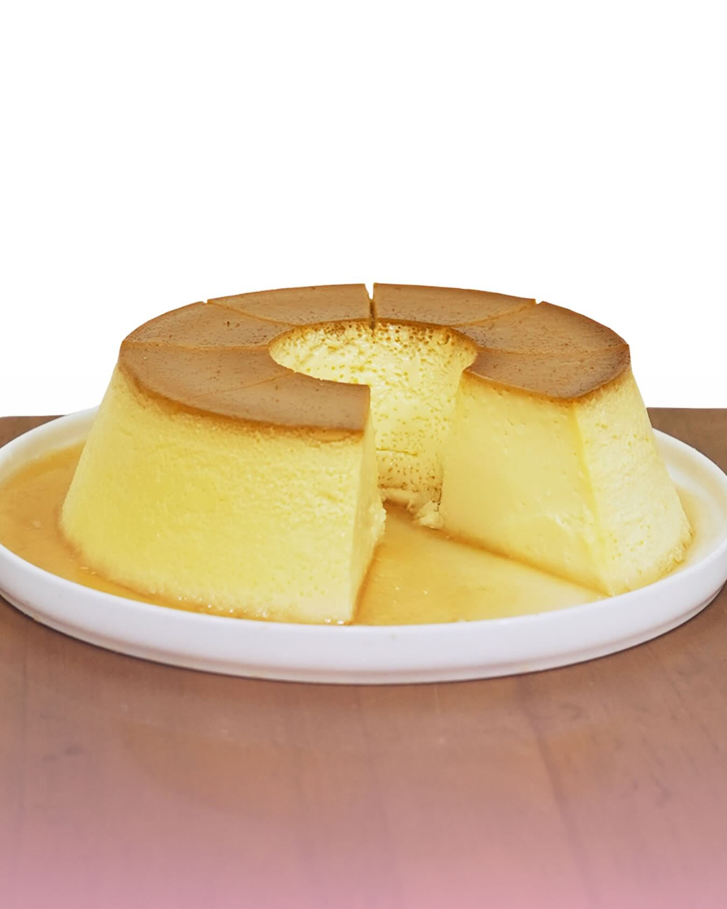
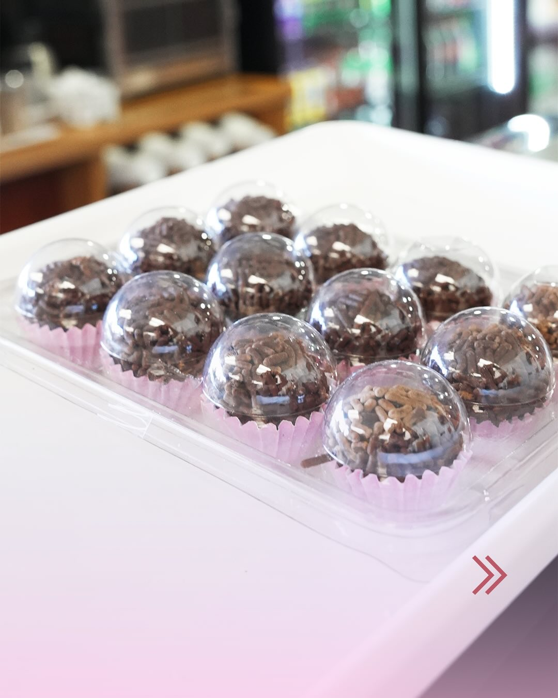
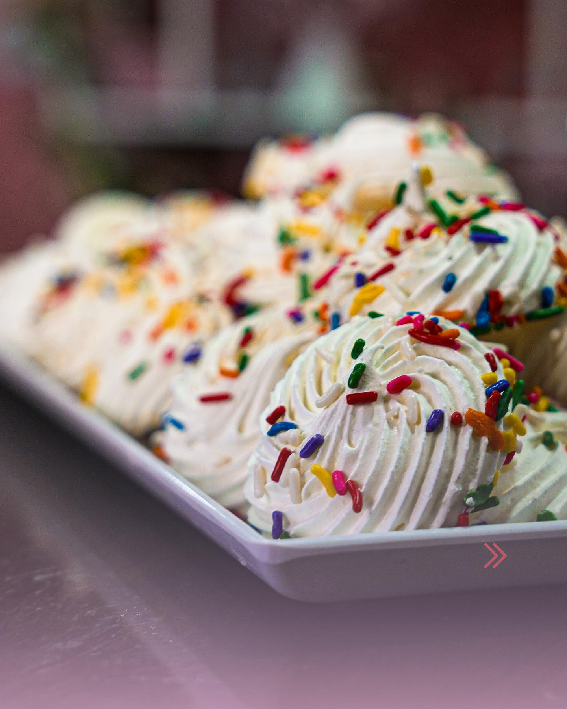
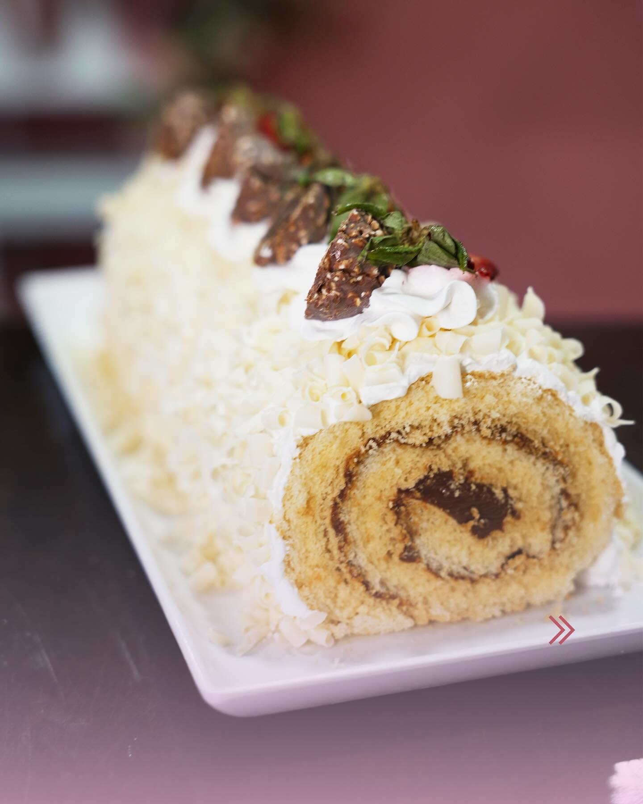
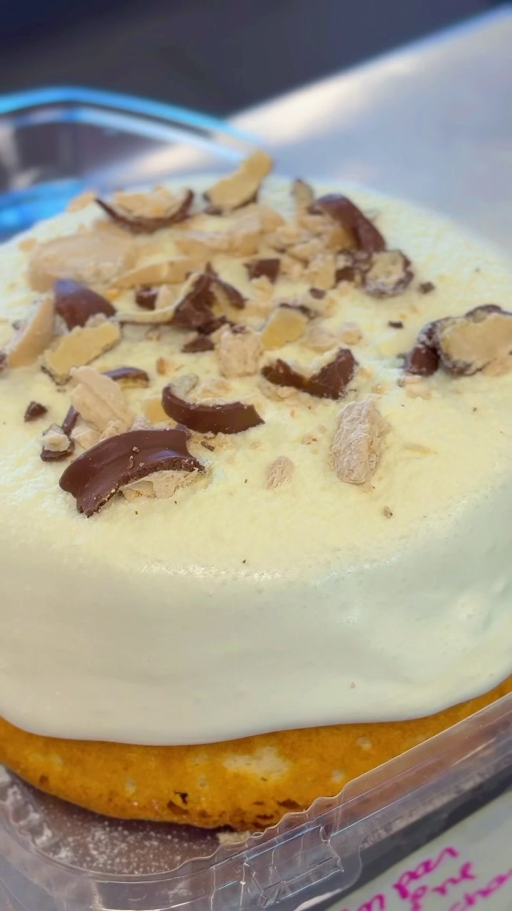
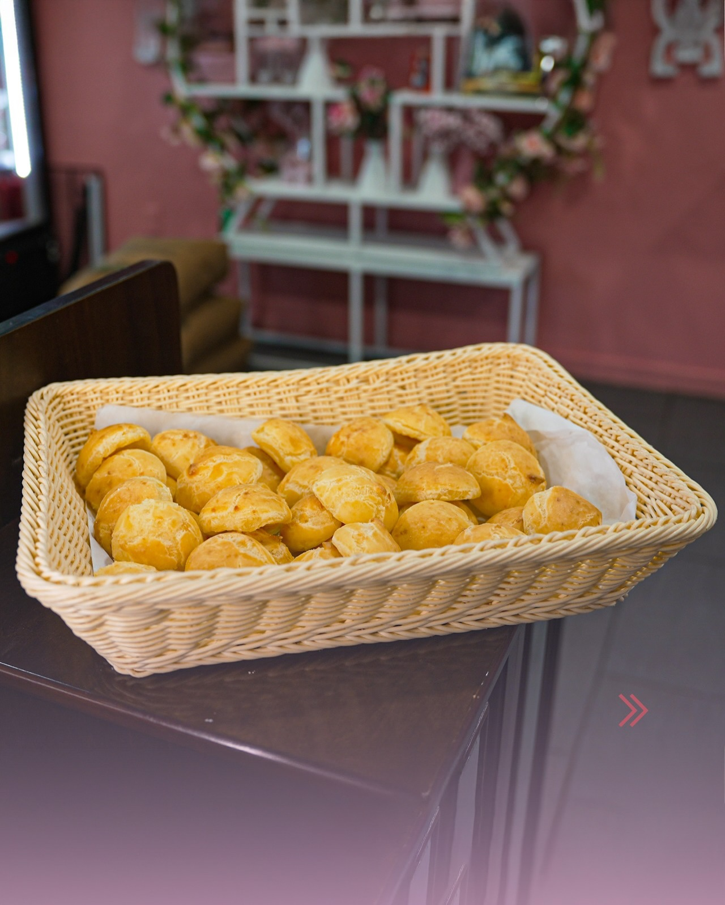
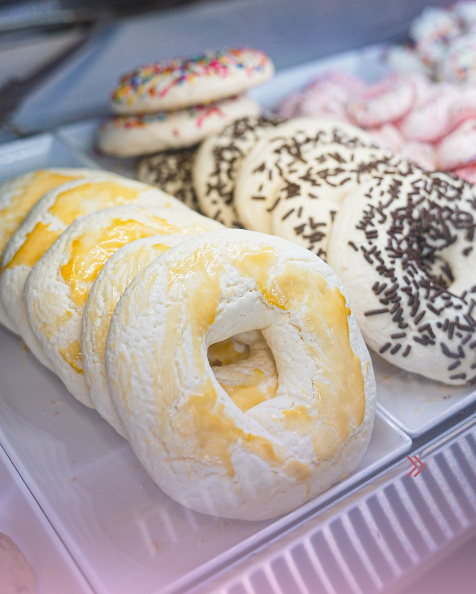
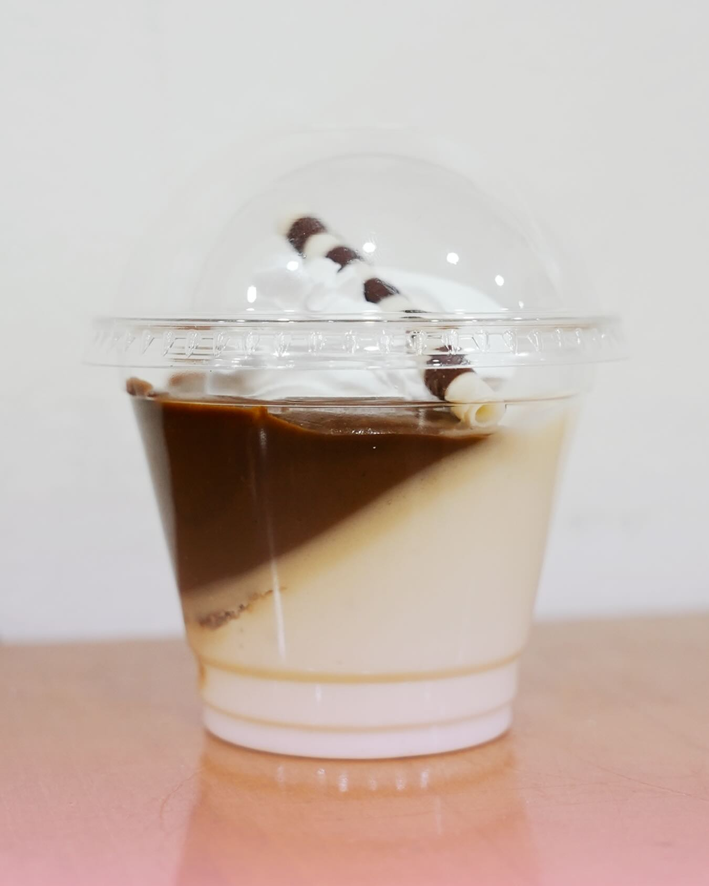
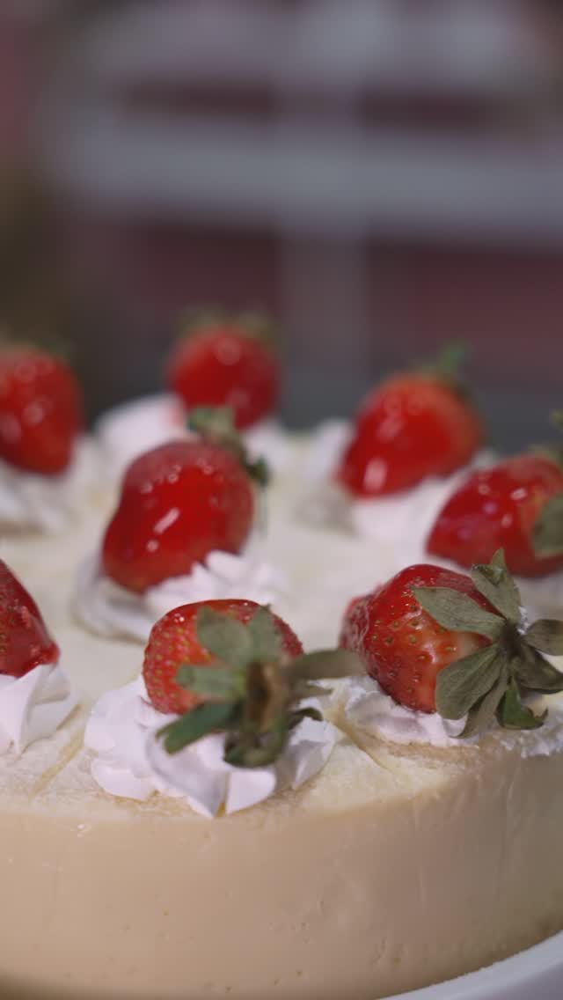
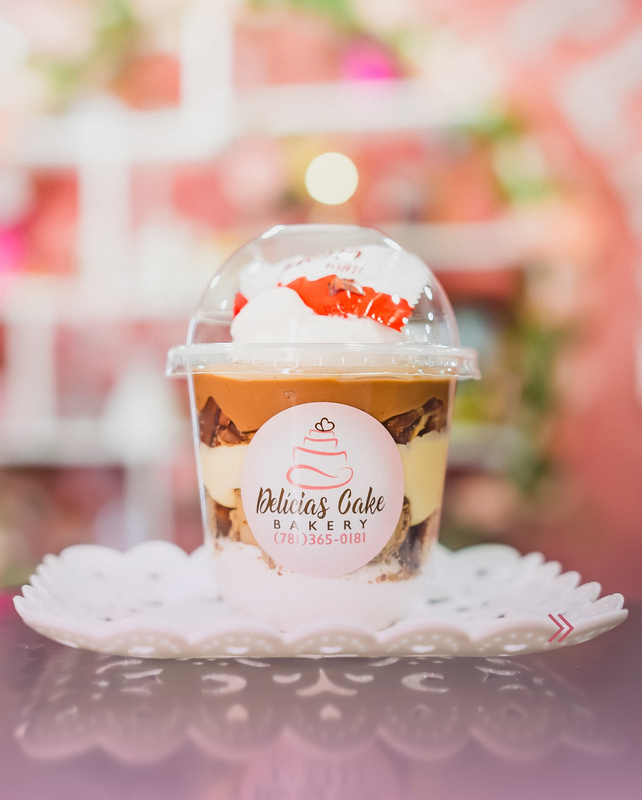
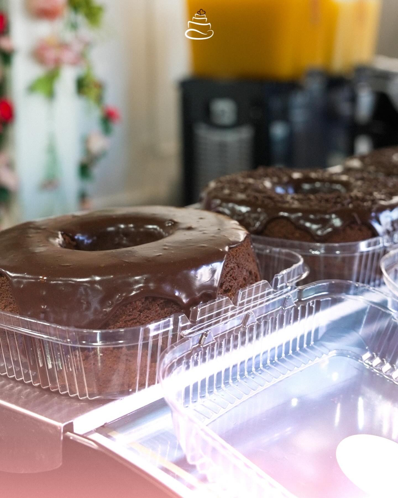
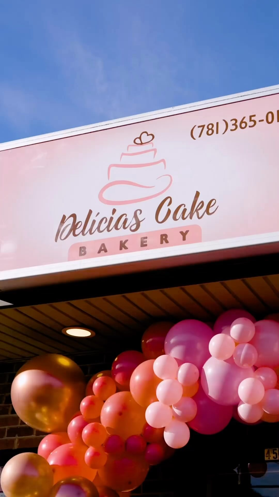












Cake & Bakery in Burlington, MA. Brazilian cakes and sweets, made by Roseli.
Order on WhatsAppBrazilian sweets, the way they taste back home. Pick a few for the drive, or a box for the table.
Sweet bread, coffee, and something to dunk in it. Sundays we open at 7.
Custom cakes for birthdays, weddings, chás and company events. Tell Roseli what you have in mind and she'll make it.
45 Winn St, Burlington.
45 Winn St, Burlington, MA 01803
Concept site by Son & Truong. Photos from @deliciascakee.